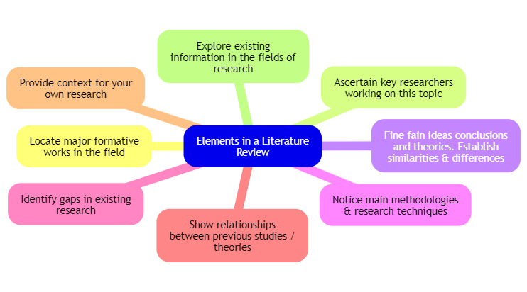
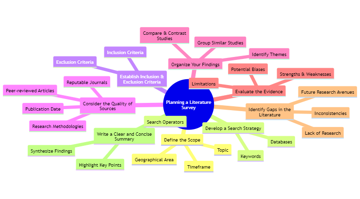
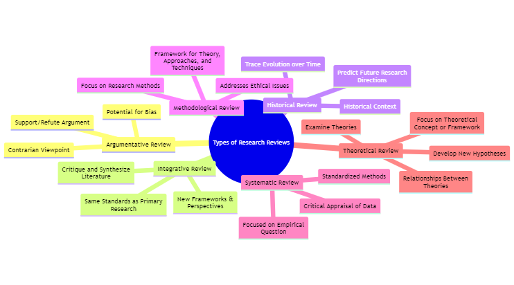
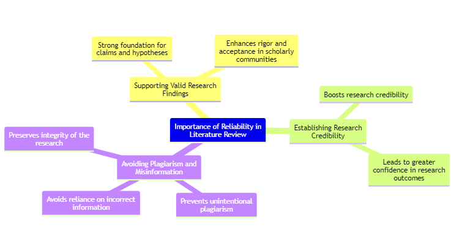
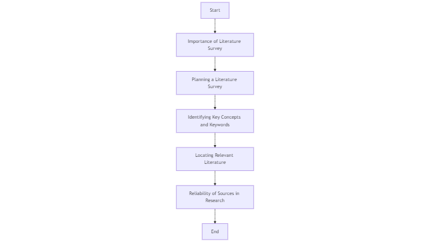

2 Literature Survey Process
2.1 Introduction
Literature review is the second step in any series research work. In scientific research, a literature review, also known as a relevant review of the literature (RRL), is an objective and critical summary of scholarly sources related to a specific research topic. It acts as a survey of current knowledge, contextualizing the research problem within the existing body of research and identifying gaps that future studies can address. Within the introduction section of a research paper, the literature review serves several key purposes:
- Introduces the topic and establishes its significance:
It captures the reader’s interest and highlights the importance of the research area.
- Provides an overview of relevant literature:
It summarizes existing research findings and theories related to the topic.
- Identifies knowledge gaps:
It pinpoints areas where existing research is lacking or contradictory, paving the way for new research questions.
- Positions the study within the field:
It establishes the context for the study and demonstrates how it builds upon or challenges existing knowledge.
- Illustrates how the study will advance knowledge:
It explains how the proposed research will address the identified gaps and contribute to the field.
A Literature Review is a systematic and comprehensive analysis of books, scholarly articles, and other sources relevant to a specific topic providing a base of knowledge on a topic. Literature reviews are designed to identify and critique the existing literature on a topic to justify your research by exposing gaps in current research. This investigation should provide a description, summary, and critical evaluation of works related to the research problem and should also add to the overall knowledge of the topic as well as demonstrating how your research will fit within a larger field of study. A literature review should offer a critical analysis of the current research on a topic and that analysis should direct your research objective. This should not be confused with a book review or an annotated bibliography both research tools but very different in purpose and scope. A Literature Review can be a stand-alone element or part of a larger end product, know your assignment. The key to a good Literature Review is to document your process.
2.2 Elements of Literature review
A literature review is a critical analysis of existing research on a specific topic. To conduct a thorough and effective review, it’s essential to consider the following components:
Locate major formative works in the field: Identify the seminal studies that have significantly shaped the current understanding of your topic. These foundational works provide a historical context and establish the key concepts and theories.
Ascertain key researchers working on this topic: Identify the leading experts in the field and their contributions. Their work can offer valuable insights, methodologies, and perspectives.
Fine fain ideas conclusions and theories. Establish similarities & differences: Analyze the key concepts, theories, and findings presented in the literature. Compare and contrast different perspectives to identify similarities, differences, and potential contradictions.
Notice main methodologies & research techniques: Examine the research methods used in the studies, such as quantitative or qualitative approaches, data collection techniques, and analysis methods. This will help you understand the strengths and limitations of different research designs.
Identify gaps in existing research: Analyze the literature to identify areas where research is lacking or inconsistent. These gaps can highlight potential avenues for your own research.
Show relationships between previous studies / theories: Examine how different studies and theories connect to each other. This will help you understand the broader context of your research and identify potential areas for synthesis or integration.
Provide context for your own research: Position your own research within the broader context of the existing literature. Explain how your study contributes to the field and addresses any identified gaps.
Explore existing information in the fields of research: Delve deeper into the specific areas of research related to your topic. This will help you gain a comprehensive understanding of the current state of knowledge and identify potential collaborators or resources.
These eight elements of an effective literature survey is shown in the following mind map.

2.3 Key points to be taken care while planning a literature survey
A literature survey is a critical analysis of existing research on a particular topic. It provides a foundation for understanding the current state of knowledge, identifying research gaps, and establishing the context for your own research.
2.4 Key Points
2.4.1 Define the Scope
Clearly outline the specific topic, timeframe, and geographical area you want to focus on.
2.4.2 Develop a Search Strategy
Identify relevant keywords, databases, and search operators to locate relevant literature.
2.4.3 Establish Inclusion and Exclusion Criteria
Determine the specific criteria that studies must meet to be included or excluded from your review.
2.4.4 Consider the Quality of Sources
Prioritize peer-reviewed articles from reputable journals. Consider the publication date and research methodologies used in the studies.
2.4.5 Organize Your Findings
Group similar studies or findings together, identify overarching themes, and compare and contrast different studies.
2.4.6 Evaluate the Evidence
Critically analyze each study, assess its strengths and weaknesses, and identify potential biases or limitations.
2.4.7 Identify Gaps in the Literature
Pinpoint areas where existing research is lacking or inconsistent, and suggest potential avenues for future research.
2.4.8 Write a Clear and Concise Summary
Highlight the most important conclusions from your survey and discuss their implications for the field.
A mindmap to keep as a ready-reckener for future research planing is shown below.

It is important to think of knowledge in a given field as consisting of three layers.
- First, there are the primary studies that researchers conduct and publish.
- Second, are the reviews of those studies that summarize and offer new interpretations built from and often extending beyond the original studies.
- Third, there are the perceptions, conclusions, opinions, and interpretations that are shared informally that become part of the lore of the field.
In composing a literature review, it is important to note that it is often this third layer of knowledge that is cited as “true” even though it often has only a loose relationship to the primary studies and secondary literature reviews.
while literature reviews are designed to provide an overview and synthesis of pertinent sources you have explored, there are several approaches to how they can be done, depending upon the type of analysis underpinning your study. Listed below are definitions of types of literature reviews:
2.5 Types of Literature Reviews
A mindmap of types of Literature reviws with charateristics is shown in the following figure and the explanation follows.

Argumentative Review: This form examines literature selectively in order to support or refute an argument, deeply embedded assumption, or philosophical problem already established in the literature. The purpose is to develop a body of literature that establishes a contrarian viewpoint. Given the value-laden nature of some social science research [e.g., educational reform; immigration control], argumentative approaches to analyzing the literature can be a legitimate and important form of discourse. However, note that they can also introduce problems of bias when they are used to make summary claims of the sort found in systematic reviews.
Integrative Review: Considered a form of research that reviews, critiques, and synthesizes representative literature on a topic in an integrated way such that new frameworks and perspectives on the topic are generated. The body of literature includes all studies that address related or identical hypotheses. A well-done integrative review meets the same standards as primary research in regard to clarity, rigor, and replication.
Historical Review: Few things rest in isolation from historical precedent. Historical reviews are focused on examining research throughout a period of time, often starting with the first time an issue, concept, theory, phenomenon emerged in the literature, then tracing its evolution within the scholarship of a discipline. The purpose is to place research in a historical context to show familiarity with state-of-the-art developments and to identify the likely directions for future research.
Methodological Review: A review does not always focus on what someone said [content], but how they said it [method of analysis]. This approach provides a framework of understanding at different levels (i.e. those of theory, substantive fields, research approaches, and data collection and analysis techniques), enables researchers to draw on a wide variety of knowledge ranging from the conceptual level to practical documents for use in fieldwork in the areas of ontological and epistemological consideration, quantitative and qualitative integration, sampling, interviewing, data collection and data analysis, and helps highlight many ethical issues which we should be aware of and consider as we go through our study.
Systematic Review: This form consists of an overview of existing evidence pertinent to a clearly formulated research question, which uses pre-specified and standardized methods to identify and critically appraise relevant research, and to collect, report, and analyze data from the studies that are included in the review. Typically it focuses on a very specific empirical question, often posed in a cause-and-effect form, such as “To what extent does A contribute to B?”
Theoretical Review: The purpose of this form is to concretely examine the corpus of theory that has accumulated in regard to an issue, concept, theory, phenomenon. The theoretical literature review help establish what theories already exist, the relationships between them, to what degree the existing theories have been investigated, and to develop new hypotheses to be tested. Often this form is used to help establish a lack of appropriate theories or reveal that current theories are inadequate for explaining new or emerging research problems. The unit of analysis can focus on a theoretical concept or a whole theory or framework.
2.6 Identifying Key Concepts and Keywords for Literature Review
One of the first tasks when conducting a literature review is to clearly identify the research topic or question. This step involves a comprehensive understanding of the topic, breaking it down into smaller components, and identifying key concepts that will form the foundation of the literature search.
To begin with, the researcher needs to understand the broader research field and the specific problem they intend to solve. For example, a study focused on improving solar panel efficiency using advanced materials requires an understanding of both solar technology and material science. These broad topics provide the groundwork for narrowing down the scope and identifying the key concepts such as solar efficiency, material properties, and energy conversion. A well-defined topic enables the researcher to break down the research question into its component parts, identifying the main ideas that will guide the literature search.
Once the research question has been clarified, it should be broken down into its fundamental components. Typically, these components are the essential nouns or noun phrases that represent the focus of the research. This step ensures that every relevant aspect of the question is examined. For instance, in a study asking, “What is the effect of renewable energy integration on grid stability?”, the main components would be renewable energy (the broad area), power grid (the context), and grid stability (the outcome). By dissecting the research question, the researcher can form a more targeted approach to their literature search, ensuring that no critical areas are overlooked.
The next step involves identifying the key concepts, which are the cornerstone ideas directly related to the research problem. These key concepts are central to the research and should reflect the primary focus areas. For example, in a study on predictive maintenance using machine learning in industrial robots, the key concepts might be predictive maintenance, machine learning, and industrial robots. These concepts guide the researcher in identifying the most relevant literature, theories, and models that apply to their area of study.
Synonyms and alternative phrases for each key concept must also be considered to capture a broader range of literature. Different researchers may use varied terminology for similar concepts, so it’s essential to consider all possible variations. Taking renewable energy as an example, synonyms such as green energy, clean energy, sustainable energy, and alternative energy sources should be used to ensure a comprehensive search. Similarly, the term machine learning might also be represented by terms like artificial intelligence, predictive algorithms, or neural networks. Using a variety of synonyms and alternative phrases in the literature search increases the likelihood of retrieving relevant studies that might otherwise be missed.
Boolean operators play a crucial role in refining the literature search. These operators — AND, OR, and NOT — are used to combine or exclude specific keywords in a search, helping to narrow down or broaden the results. For instance, using AND in the query “renewable energy AND grid stability” will retrieve studies that discuss both renewable energy and grid stability together, while using OR in “renewable energy OR alternative energy sources” will provide results for either term. Excluding unrelated topics can also be done using NOT, as in “renewable energy NOT fossil fuels,” which will eliminate studies focused on fossil fuels. Effectively utilizing Boolean operators allows researchers to fine-tune their search and yield more focused and relevant results.
In addition to Boolean operators, truncation and wildcards are powerful tools in literature searching. Truncation involves using a symbol, usually an asterisk (), to search for multiple word forms. For example, searching for “optim” will return results for optimize, optimization, and optimizing. Wildcards, on the other hand, allow the researcher to search for words with various spellings, such as “colo*r” to capture both color and colour. This technique ensures that different word forms and spellings do not lead to missed relevant studies.
Building a keyword list is another essential step in organizing a literature search. After identifying key concepts and their synonyms, the researcher should create a list of keywords. This list must cover the primary terms and their variations to ensure that the search is thorough and inclusive. For instance, for a study on data privacy in cloud computing systems, the keyword list might include terms like data privacy, cloud security, encryption, cloud storage, confidential computing, and GDPR (General Data Protection Regulation). Having a well-structured keyword list allows the researcher to run an organized and efficient literature search across databases.
It’s also crucial to search in specialized databases relevant to the field of study. Different disciplines have dedicated databases that house specialized research. For example, engineering research may require the use of IEEE Xplore, while medical research might rely on PubMed or Medline. These databases focus on high-quality, field-specific studies and can provide more accurate and reliable information for the literature review. For example, a mechanical engineering researcher might use IEEE Xplore to search for studies related to robotics or automation, while a medical researcher investigating clinical trials may turn to PubMed or the Cochrane Library. Choosing the appropriate database is key to finding relevant and valuable studies.
After conducting the initial search, the results need to be carefully reviewed to determine their relevance to the research question. Titles, abstracts, and keywords should be examined to assess whether the articles align with the research objectives. If the results are not as relevant as expected, the researcher may need to refine their search strategy by adjusting keywords, adding Boolean operators, or excluding certain topics. For instance, if a search for machine learning AND predictive maintenance returns too many general results on machine learning, refining the search with a more specific term, such as in industrial robots, can help narrow the focus. This process of reviewing and refining the search ensures that the literature review is focused and that the most relevant studies are included.
2.7 Open Source Tools for Literature Review
When conducting a literature review, it’s crucial to use the right tools to help streamline the process of gathering, organizing, and analyzing literature. Below are some excellent open-source tools that assist researchers in identifying key concepts, building keyword lists, conducting comprehensive searches, and managing literature.
2.7.1 Zotero
Zotero is an open-source reference management tool that helps researchers collect, organize, cite, and share research sources. Its ability to recognize content from databases, websites, and journals allows for automatic extraction of metadata, making it easier to organize literature. Researchers can create collections of articles, add tags, and categorize references according to key concepts or research themes. Zotero’s integrated search and tagging features help with keyword organization and identifying related sources.
2.7.1.1 Key Features
- Automatic bibliography creation in various citation formats.
- Customizable tagging and search functionality for organizing literature.
- Browser extensions for easy collection of articles from the web.
- Integration with word processors for seamless referencing.
2.7.2 JabRef
JabRef is a BibTeX reference manager that helps researchers organize and manage their references in an open-source environment. It is especially useful for users but supports other formats. JabRef’s search feature can be used to find literature based on key concepts and keywords. It also allows researchers to attach keywords and annotations to each reference for better organization and tracking.
2.7.2.1 Key Features
- Integration with various scientific databases like Google Scholar, Springer, and IEEE.
- Organization of references using custom fields and keyword annotations.
- Cross-platform and suitable for users.
- Import and export capabilities for various citation formats.
2.7.3 Publish or Perish
Publish or Perish is an open-source software that retrieves and analyzes academic citations. It uses Google Scholar, Crossref, PubMed, and other databases to extract citation data for research papers. This tool is useful for conducting keyword-based searches and evaluating the impact of literature using citation metrics, helping identify key studies that align with research concepts.
2.7.3.1 Key Features
- Searches across databases like Google Scholar, Microsoft Academic, PubMed, and more.
- Comprehensive citation analysis, including metrics like h-index and g-index.
- Helps identify the most cited and relevant literature related to key concepts.
2.7.4 Connected Papers
Connected Papers is an open-source tool designed to help researchers discover relevant papers in their field. By inputting a seed paper (based on identified key concepts or keywords), Connected Papers builds a graph of related works, helping researchers visually explore how studies are interconnected. This is particularly useful for identifying additional literature that may not surface during traditional keyword searches.
2.7.4.1 Key Features
- Visual representation of related academic papers in a graph format.
- Discover hidden connections between research papers based on a seed paper.
- Identifies foundational and influential works in a specific research area.
2.7.5 Mendeley
Mendeley is a free reference manager and academic social network that helps organize research papers, collaborate online, and discover the latest research trends. It allows users to annotate PDFs, organize research libraries, and search for relevant literature based on keywords and tags. Mendeley also suggests related articles based on the contents of the library, enhancing the literature search process.
2.7.5.1 Key Features
- PDF reader and annotation tools.
- Automatic extraction of citation details and organizing papers into folders.
- Social networking feature for discovering and sharing papers.
- Browser plugin to capture citations from websites.
2.7.6 Docear
Docear is an open-source academic literature management tool that integrates mind mapping and reference management. It helps researchers organize their literature and notes in a mind map structure, which can be particularly useful for identifying key concepts and tracking related works. Researchers can build a visual representation of their literature and keep track of keywords, concepts, and research themes.
2.7.6.1 Key Features
- Unique mind mapping feature to organize thoughts, literature, and annotations.
- Comprehensive PDF management and annotation.
- Integration with BibTeX for users.
- Helps organize literature in hierarchical structures based on research questions.
2.7.7 OpenThesaurus
OpenThesaurus is a useful tool for expanding your keyword list. It provides synonyms and related terms for words, helping researchers to enhance their search queries by finding alternative expressions. This is especially helpful when trying to ensure the inclusion of all relevant literature in a keyword-based search.
2.7.7.1 Key Features
- Provides synonyms and alternative terms for keywords.
- Enhances search queries with broader or related terms.
- Open-source and web-based, easy to access.
2.7.8 Voyant Tools
Voyant Tools is an open-source text analysis and visualization tool that helps researchers analyze large volumes of text data. For literature reviews, it can process large collections of research papers to identify frequently occurring terms, key phrases, and trends, providing insights into the main themes within the body of literature.
2.7.8.1 Key Features
- Analyzes large text datasets and identifies frequently occurring keywords.
- Provides visualizations, including word clouds, trends, and topic modeling.
- Helps identify key concepts and terms within a corpus of literature.
A table of popular leterature search tools are shown in following table.
| Tool | Description | Key Features | Website |
|---|---|---|---|
| Zotero | A free tool for managing and sharing research sources. | Reference management, citation generation, supports multiple formats, collaborative features. | zotero.org |
| JabRef | A reference manager for BibTeX and BibLaTeX databases. | Citation management, integrates with LaTeX, advanced search and filtering options. | jabref.org |
| Mendeley | Reference manager and academic social network for organizing research. | Reference management, PDF annotation, citation generation, collaboration tools. | mendeley.com |
| Docear | An academic literature management tool that includes a mind-mapping feature. | Integrated literature management, mind-mapping, PDF annotation, reference organization. | docear.org |
| Publish or Perish | Software that retrieves and analyzes academic citations to provide various metrics. | Citation analysis, various metrics (e.g., h-index, g-index), data export capabilities. | harzing.com |
| Connected Papers | A tool for exploring and visualizing the relationships between research papers. | Graph-based visualization, discovery of related papers, interactive exploration. | connectedpapers.com |
In the next section, we will focus on the role of reliability of knowledge sources in research.
2.8 Role of Reliability of a Literature Source
In academic research, the reliability of a literature source plays a crucial role in determining the credibility and validity of the research outcomes. Reliability refers to the trustworthiness of the information, consistency in the presentation of facts, and adherence to scholarly standards. Using unreliable sources can lead to faulty assumptions, misinterpretations, and incorrect conclusions, which may invalidate research efforts.
Reliable literature sources often come from established and peer-reviewed journals, respected authors, and well-known publishers. They exhibit consistency across multiple studies, provide transparent data and methodologies, and typically withstand critical scrutiny by the academic community. Conversely, unreliable sources may contain biased, outdated, or inaccurate information, and lack proper references or peer review.
2.8.1 Importance of Reliability in Literature Review
- Supporting Valid Research Findings: Reliable sources provide a strong foundation for supporting the claims and hypotheses of a research project. This enhances the rigor and acceptance of the research in scholarly communities.
- Establishing Research Credibility: Citing reliable sources boosts the credibility of the research, leading to greater confidence in its outcomes.
- Avoiding Plagiarism and Misinformation: Unreliable sources may lead to unintentional plagiarism or reliance on incorrect information, which can severely undermine the integrity of the research.
A mindmap for easy recollection is shown here:

2.8.2 How to Identify Reliable Sources
- Peer-Reviewed Journals: Articles published in peer-reviewed journals are often more reliable, as they have undergone rigorous evaluation by experts.
- Publisher Reputation: Books or papers published by reputable academic institutions or publishers like Springer, Elsevier, or IEEE are generally considered reliable.
- Citations and References: Reliable sources often cite a broad range of previous work, which demonstrates thorough research and knowledge of the field.
- Updated Information: Reliable sources contain up-to-date information and address current developments in the field.
- Author’s Credentials: The credibility and expertise of the author are significant indicators of the reliability of a source. Researchers with strong academic backgrounds are typically more trustworthy.
2.9 Checking the Authenticity of Sources Using Open Source Tools
Open-source tools can help researchers assess the authenticity and credibility of literature. Below are some tools that can be used for this purpose:
2.9.1 Google Scholar Metrics
Google Scholar provides citation counts, which indicate how many other researchers have cited a particular article. Highly cited works tend to be more reliable as they are often scrutinized and used by other researchers.
How to use: - Search for the article in Google Scholar. - Check the citation count and h-index of the journal where it is published. - Higher citations and reputable journal rankings generally indicate reliable sources.
2.9.2 Scite
Scite is an open-source tool that helps verify how research papers have been cited. It provides context for citations, showing whether a paper has been supported, disputed, or mentioned neutrally. This allows researchers to assess whether the findings of a paper are widely accepted or contested.
How to use: - Enter the DOI of a research paper on the Scite platform. - Review how other researchers have cited the paper, including positive or critical evaluations.
Tbale of popular authenticity checking open sourse platforms.
| Tool | Description | Website |
|---|---|---|
| Google Scholar Metrics | Provides citation counts to indicate the number of times an article has been cited by other researchers. | scholar.google.com |
| Scite | Verifies how research papers have been cited, providing context for whether citations are supportive, disputed, or neutral. | scite.ai |
| Unpaywall | Provides access to open-access versions of academic articles, ensuring authenticity and accessibility. | unpaywall.org |
| Dimensions | Offers citation analysis and journal impact information, providing insights into source credibility. | dimensions.ai |
| CrossRef | Provides DOI lookup services to verify the legitimacy and publication details of articles and journals. | crossref.org |
| OpenCitations | Provides citation data from openly available sources to analyze citation networks and influence. | opencitations.net |
| Plagiarism Checkers | Tools for checking whether sources have been plagiarized or properly cited. | turnitin.com / plagscan.com |
2.9.3 Unpaywall
Unpaywall is a tool for accessing open-access versions of academic articles. It ensures that the literature you are citing is authentic and accessible from legitimate sources.
How to use: - Install the Unpaywall browser extension. - When browsing an article on a publisher’s page, Unpaywall will show if there’s a legal, free-to-read version of the paper available.
2.9.4 Dimensions
Dimensions is a freely available research database offering insights into citation analysis and journal impact. It provides citation counts, journal ranks, and detailed information about the authors, allowing you to assess the credibility of a source.
How to use: - Search for a paper or author on the Dimensions platform. - Review citation metrics, journal impact scores, and other details to verify the reliability of the source.
2.9.5 CrossRef
CrossRef is a non-profit organization that provides DOI (Digital Object Identifier) lookup services. It allows researchers to verify the legitimacy and publication details of articles and journals.
How to use: - Enter the DOI on the CrossRef website to retrieve metadata about the article, including the publication date, journal, and author details. - Ensure the article is linked to a reliable journal or publisher.
2.9.6 OpenCitations
OpenCitations is a tool that provides citation data from openly available sources. Researchers can use it to check the citation network of a particular paper and its influence in the field.
How to use: - Search for the paper or author on OpenCitations. - Analyze the citation network to see how widely the paper has been cited and in what contexts.
2.9.7 Plagiarism Checkers (Turnitin, Plagscan)
While not entirely open-source, some plagiarism checkers have free or open-access features that can help verify whether a source has been plagiarized or if it has been properly cited.
How to use: - Submit a paper or excerpt to the plagiarism checker to identify any issues related to authenticity. - Ensure proper attribution to original sources by reviewing the generated report.
2.10 Unit summary
A literature review is a critical part of any research project, ensuring that the researcher builds on a foundation of existing knowledge. It allows the researcher to understand the current state of research, identify gaps, and position their work within the broader academic conversation.
2.10.1 Importance of Literature Survey
A literature survey is essential for establishing a comprehensive understanding of the topic. It helps researchers avoid duplication, build on previous work, and refine research questions by learning from others’ successes and mistakes. An effective literature review ensures that research is informed, relevant, and aligned with the current academic discourse.
2.10.2 Planning a Literature Survey
The first step in planning a literature survey involves setting clear objectives. Researchers should begin by identifying their research problem or research question. Understanding the scope of the topic allows for focused exploration of the relevant literature. A well-planned review prevents the researcher from becoming overwhelmed by the vast amount of information available.
2.10.3 Identifying Key Concepts and Keywords
Identifying key concepts and keywords is crucial for a successful literature search. These keywords stem from the research problem and are pivotal in locating relevant sources. By brainstorming, reviewing existing literature, and defining the key variables, researchers can generate a list of terms to use in search databases, increasing the efficiency and relevance of their search.
2.10.4 Locating Relevant Literature
Once keywords are identified, researchers can use various academic databases like Google Scholar, IEEE Xplore, or PubMed to find relevant literature. A systematic approach to searching ensures that researchers locate the most pertinent articles, journals, and books for their work. Using advanced search options, citation networks, and reference lists can help in discovering high-quality sources.
2.10.5 Reliability of Sources in Research
The reliability of literature sources is critical for ensuring credible and trustworthy research findings. Researchers should prioritize peer-reviewed journals, works from reputable authors and publishers, and sources with high citation counts. Open-source tools like Google Scholar Metrics, Scite, and Unpaywall can help verify the credibility and authenticity of sources. These tools offer citation data, access to free versions of papers, and insights into how the research has been received and cited by others in the academic community.
Unit summary flowchart
